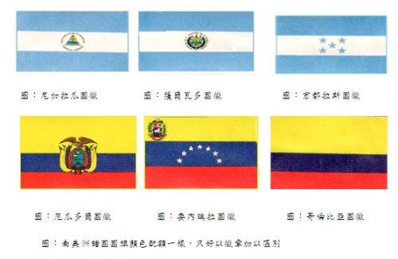
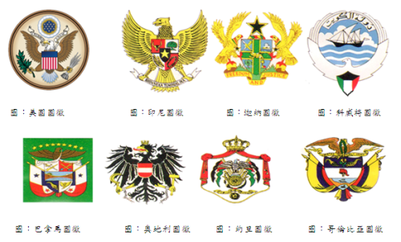
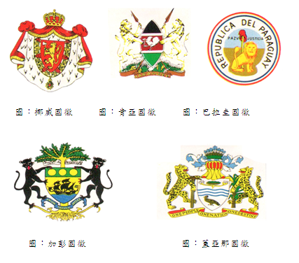
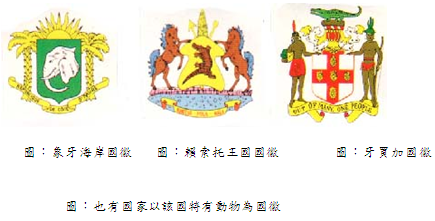
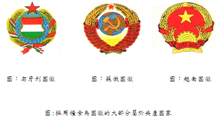
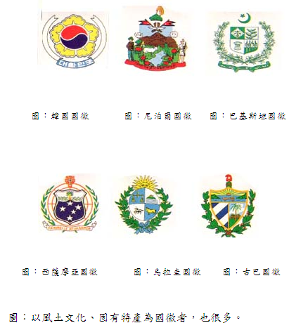

國徽和國旗一樣皆象徵一個國家所崇尚的精神，一般而言國旗的圖案較抽象，而國徽的圖像較具體化，國徽大部份皆以強壯、勇猛的動物為象徵，也有國家把其本國特有的植物和動物晝在一起，更有趣的是有些國家的國旗色彩的配置相同，不得不以徽章來加以區別其國旗，如中美洲的宏都拉斯、尼加拉瓜、薩爾瓦多三個，以及南美洲的厄瓜多爾、哥倫比亞、委內瑞拉三個國家等皆屬於這個例子。

總之探討國徽設計上的共通點，也可以說是非常有意思的，茲簡介如下:
一、強壯、勇猛的動物為國徽
在動物方面，多出現百鳥之王的鷲或百獸之王的獅子，因為自古以來，這兩種動物的強壯、勇猛常被視為權威的象徵，其中又以美國國徽的鷲最著名，美國國徽的鷲和別的國家的鷲不同，是象徵古代羅馬共和國政體的頭鷲，並用星箭質的條紋來表示最初的十三州，箭是表示戰爭，橄欖表示和平，徽章製訂於1783年，其他以鷹鷲為國徽的國家，尚有印尼、科威特、約旦、迦納、巴拿馬、哥倫比亞、奧地利等國的國徽，以獅子為國徽的國家也不少，但有時是將獅子再配合另一種動物方式存在，單純獅子一種動物當國徽的國家有挪威、肯亞及巴拉圭，其他出現的勇猛動物尚有加彭及蓋亞那國徽的豹子。


圖 : 世界上採用強壯、勇猛為國徵的國家最多。
二、兩種動物為國徽
許多國家的國徽皆是以兩種的動物當國徽，其中最最著名的是英國。嚴格講英國的徽章就是皇室的徽章，不是國徵。支撐盾牌左側是獅子，右側是獨角獸，盾牌周圍是嘉德勳章。絲帶上有「神予我權利」的字樣。牌的圖案中，左上與右下的獅子是象徵英格蘭，左下的豎琴是象徵愛爾蘭，其他含有兩種動物之國徽，尚有新加坡、烏干達、格瑞那達、智利。
三、以其他動物為國徽:
有些國家會以其本國特有之動物當國徽，以便看了能一目了然，如象牙海岸的國徽，綠色的盾牌中畫有象頭，讓人一看毫無疑間的就知道這個國家是象牙海岸，一般人對鱷魚的印象並不很好，但是全世界也有以鱷魚當國徽的國家如牙買加、賴索托的國徵。

四：以糧食為國徽
以糧食為國徽的國家大部分是共產主義的國家，蘇俄及匈牙利的國徽皆以小麥為背景，唯目前共產主義已經解體，其國徽可能也會跟著改，唯越南因其主要農作物是稻米，故以稻穗作圈，配以象徵社會主義的星，再用齒輪表示完成工業化的意願。

五、以風土文化、固有特產為國徽世界各國的國徽中，將風土有關的動、植物或宗教信仰圖案化再熔入國徽中，不勝枚舉，最有趣的如韓國與尼泊爾的國徽，韓國的國徽，採取國花「木僅花」的花瓣，中央配上表示陰陽的太極，由於木僅樹幹上會生許多花苞，一朵花凋落後，其它花苞會連續不斷地開花，象徵民族生命無窮盡的強韌性，至於尼泊爾的國徽，是一個含有各樣宗教而饒富意思的國徽。除了佛陀的足跡外，還配以人民的武器，消滅邪惡的寺院，神聖的牛及雉雞等，且上面記載「我們祖國比天堂更可親」。其他有趣的宗教國徽如巴基斯坦國徽上部仍有象徵回教的星、刀與月及全部為綠色，西薩摩亞的十字架表示該國是個基督教國，並標文字「神啊！但願作為薩摩亞的基礎。」烏拉奎及古巴的國徽也是非常有趣，在烏拉圭的國徽中，畫有象徵獨立金黃色太陽下的盾牌圖案，在左上是表示天秤(正義與自由)，右上是表示蒙特維的亞的山丘，左下是馬(自由)，右下是牛(財富)。用國家色彩的絲帶連結月桂樹與橄欖的樹枝。古巴的國徽盾牌上的帽子是表示自由，風景是加勒比海與佛羅里達州，猶加敦半島。鑰匙是表示古巴地理位置的重要性，環繞盾牌的橄欖與月桂樹是表示和平與勝利。
